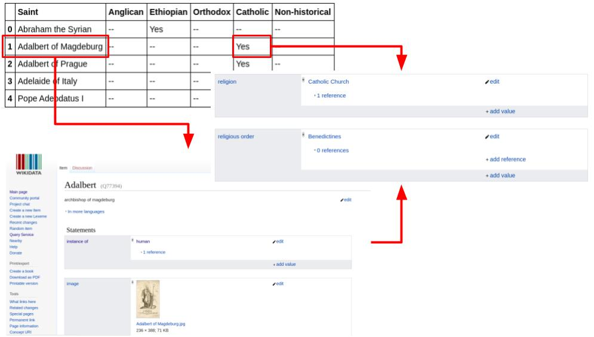

Keywords:
-
Wikidata
-
DBPedia
-
Sentence Encoder
-
Knowledge Graph Embedding
Tabular Data to Knowledge Graph Matching
Highlights:
- -> Understand table context and map the content to knowledge graphs such as dbpedia and wikidata
- -> This is an ongoing work for ISWC table understanding challenges
Album:
